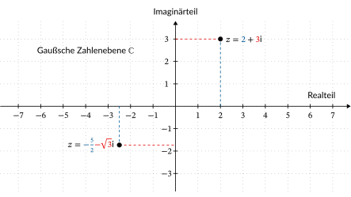

8.1 Was sind komplexe Zahlen?#
Mit zunehmender Komplexität unseres Alltags wächst auch die Komplexität der Zahlen, die wir benötigen, um ihn zu beschreiben. Bereits im Kindergarten lernen wir, mit Zahlen bis zehn umzugehen, um beispielsweise unser Alter oder die Anzahl der Gäste bei einem Geburtstag zu bestimmen. Hierbei handelt es sich um natürliche Zahlen, die grundlegend für das Zählen sind.
Wenn wir jedoch in den Bereich der Finanzen eintauchen, erweitert sich unser Zahlenverständnis. Wenn wir beispielsweise mehr Geld ausgeben, als wir zur Verfügung haben, benötigen wir ganze Zahlen, um einen negativen Kontostand darzustellen. Beim Kauf eines Handys für 500 EUR, das wir in 24 Monatsraten abzahlen, nutzen wir rationale Zahlen. Die Monatsrate berechnet als 500/24 EUR illustriert dies anschaulich.
Technische und naturwissenschaftliche Beschreibungen erfordern oft den Gebrauch von reellen Zahlen. Ein klassisches Beispiel ist die Länge der Diagonale eines DIN A4-Blattes, die mit \(\sqrt{297^2 + 210^2}\) mm berechnet wird und somit eine reelle Zahl ist. Doch auch die Welt der reellen Zahlen hat ihre Grenzen. Diese werden sichtbar, wenn wir versuchen, die quadratische Gleichung \(x^2 = -1\) zu lösen. Für solche Fälle benötigen wir die komplexen Zahlen, die über den Bereich der reellen Zahlen hinausgehen.
Lernziele#
Lernziele
Sie wissen, dass die imaginäre Einheit \(\mathrm{i}\) durch \(\mathrm{i}^2=-1\) definiert ist.
Sie wissen, was eine imaginäre Zahl ist.
Sie wissen, was eine komplexe Zahl ist.
Sie wissen, was die Menge \(\pmb{\mathbb{C}}\) ist.
Sie können eine komplexe Zahl in der Normalform formulieren.
Sie können eine komplexe Zahl in die Gaußschen Zahlenebene einzeichnen.
Sie können den Realteil und den Imaginärteil einer komplexen Zahl bestimmen.
Die imaginäre Einheit i und die imaginären Zahlen#
Innerhalb der Menge der reellen Zahlen \(\mathbb{R}\) stößt man an Grenzen, wie beispielsweise bei der Lösung der quadratischen Gleichung
Dies liegt daran, dass das Produkt zweier reeller Zahlen, egal ob positiv oder negativ, immer positiv ist, und somit die Gleichung in diesem Zahlensystem unlösbar ist. Selbst die Zahl 0 kann diese Gleichung nicht lösen.
Um diese Lücke zu schließen, erfanden Mathematiker im 16. Jahrhundert eine neue Zahl, die sogenannte imaginäre Einheit und bezeichneten sie mit dem Symbol \(\mathrm{i}\). Von dieser neuen Zahl forderten sie, dass sie mit sich selbst multipliziert -1 ergibt, also die Eigenschaft
erfüllen soll. Der Name »imaginär« wurde von René Descartes eingeführt. Imaginär ist ein lateinisches Adjektiv und bedeutet, dass etwas nicht wirklich vorhanden ist, sondern nur in der Einbildung oder Vorstellung einer Person existiert.
Die imaginäre Einheit kann ähnlich wie eine physikalische Einheit benutzt werden. Beispielsweise gilt
oder
Bei der Multiplikation oder dem Potenzieren können wir die Definition \(\mathrm{i}^2 = -1\) ausnutzen. Es gilt beispielsweise
oder
Die imaginäre Einheit ist also zusammengefasst folgendermaßen definiert.
Was ist … die imaginäre Einheit i?
Die imaginäre Einheit \(\mathrm{i}\) ist eine spezielle, nicht-reelle Zahl mit der Eigenschaft
Aus der imaginären Einheit \(\mathrm{i}\) wird dann eine sogenannte imaginäre Zahl gebildet, indem die imaginäre Einheit \(\mathrm{i}\) mit einem reellen Faktor \(b\) multipliziert wird. Eine imaginäre Zahl ist also ein Vielfaches der imaginären Einheit. In Mengenschreibweise werden die imaginären Zahlen folgendermaßen notiert:
Für diese Menge gibt es kein besonderes Symbol wie beispielsweise für die reellen Zahlen \(\mathbb{R}\).
Komplexe Zahlen#
Im vorherigen Abschnitt haben wir die imaginäre Einheit \(\mathrm{i}\) und die imaginären Zahlen \(b\cdot\mathrm{i}\) kennengelernt, bei denen die imaginäre Einheit \(\mathrm{i}\) mit einem reellen Faktor \(b\) multipliziert wird. Damit ist eine komplett neue Zahlenart entstanden, die wir nun mit den reellen Zahlen kombinieren wollen, um die komplexen Zahlen zu bilden.
Eine komplexe Zahl \(z\) ist definiert als die Summe einer reellen Zahl und einer imaginären Zahl, also beispielsweise
oder
Und warum werden diese Zahlen komplex genannt? Das Adjektiv »komplex« ist wiederum ein lateinisches Wort und bedeutet vielschichtig oder zusammengesetzt. Komplexe Zahlen sind also Zahlen, die aus einer reellen Zahl und einer imaginären Zahl zusammengesetzt sind. Formal wird eine komplexe Zahl wie folgt notiert:
Dabei sind \(a\) und \(b\) reelle Zahlen, d.h. \(a, b \in \mathbb{R}\). Diese Darstellung ist als Normalform der komplexen Zahlen bekannt. In späteren Abschnitten werden weitere Darstellungsformen wie die trigonometrische Form und die Exponentialform eingeführt.
Jetzt brauchen wir nur noch ein Symbol für die komplexen Zahlen. Für die natürlichen Zahlen wird das Symbol \(\mathbb{N}\) verwendet, für die ganzen Zahlen \(\mathbb{Z}\). Das Symbol \(\mathbb{Q}\) steht für die rationale Zahlen und \(\mathbb{R}\) für die reelle Zahlen. Die Menge der komplexen Zahlen wird durch das Symbol \(\mathbb{C}\) bezeichnet.
Zusammengefasst werden also komplexe Zahlen folgendermaßen definiert.
Was ist … eine komplexe Zahl?
Eine komplexe Zahl ist eine zusammengesetzte Zahl aus einer reellen Zahl und einer imaginären Zahl
Dabei ist \(a\) eine reelle Zahl und \(b\mathrm{i}\) eine imaginäre Zahl. Die Menge der komplexen Zahlen wird mit \(\mathbb{C}\) bezeichnet.
Gaußsche Zahlenebene#
In der Schule werden üblicherweise die natürlichen Zahlen als Zahlenstrahl dargestellt. Das soll den Schülerinnen und Schülern helfen zu verstehen, dass die natürlichen Zahlen eine Ordnung haben, also beispielsweise \(3 < 7\) gilt. Auch die Addition und die Subtraktion können so intuitiv erklärt werden.

Mit der Einführung der ganzen Zahlen wird der Zahlenstrahl zu einer Zahlengeraden erweitert.

Die rationalen Zahlen werden zwischen den ganzen Zahlen eingefügt.

Und letztendlich werden auch noch die reellen Zahlen dazugepackt.

Die imaginäre Einheit \(\mathrm{i}\) ist jedoch keine reelle Zahl und darf deshalb nicht auf der reellen Zahlengeraden \(\mathbb{R}\) eingezeichnet werden. Sie liegt außerhalb. Dies gilt für alle imaginären Zahlen. Deshalb brauchen die imaginären Zahlen eine eigene Zahlengerade. Diese wird senkrecht zur reellen Zahlengerade aufgetragen, so dass ein zweidimensionales Koordinatensystem entsteht.


Auf der horizontalen Achse (Rechtsachse) werden die reellen Zahlen aufgetragen. Der reelle Teil einer komplexen Zahl wird als Realteil bezeichnet. Man könnte vermuten, dass auf der vertikalen Achse (Hochachse) die imaginären Zahlen augetragen würden. Dies ist aber nicht der Fall, sondern es werden die reellen Zahlen aufgetragen, mit denen die imaginäre Einheit \(\mathrm{i}\) multipliziert wird. Dieser Teil der komplexen Zahl wird Imaginärteil genannt.
Beispiel 1: Die komplexe Zahl
hat den Realteil \(2\) und den Imaginärteil \(3\). In der Gaußschen Zahlenebene wird \(z = 2+3\mathrm{i}\) als Punkt \((2,3)\) notiert.
Beispiel 2: Die komplexe Zahl
hat den Realteil \(-\frac{5}{2}\) und den Imaginärteil \(-\sqrt{3}\). In der Gaußschen Zahlenebene wird \(z = -\frac{5}{2} - \sqrt{3}\mathrm{i}\) als Punkt \((-\frac{5}{2},-\sqrt{3})\) notiert.
Wir halten noch die allgemeine Definition der Begriffe Realteil und Imaginärteil fest.
Was sind … Realteil und Imaginärteil?
Ist \(z\) eine komplexe Zahl in der Normalform \(z = a + b\mathrm{i}\), dann nennt man die reelle Zahl \(a\) den Realteil von \(z\). Als Abkürzung wird das Symbol \(\mathrm{Re}\) benutzt und als Formel schreibt man
Die reelle Zahl \(b\), die zusammen mit der imaginären Einheit \(\mathrm{i}\) die imaginäre Zahl \(b\mathrm{i}\) bildet, heißt Imaginärteil von \(z\). Der Imaginärteil wird mit \(\mathrm{Im}\) abgekürzt. Als Formel schreibt man
Für die beiden obigen Beispiele gilt also:
und
Das folgende Video fasst die oben eingeführten Begriffe zusammen.
Video “Komplexe Zahlen z=x+iy” von MathePeter
Im nächsten Video präsentiert Herr Prof. Hoever eine Einführung in die komplexen Zahlen. Das Video zeigt auch schon die ersten Grundrechenoperationen, die aber erst im nächsten Kapitel eingeführt werden.
Video “Komplexe Zahlen - Einführung” von Prof. Hoever
Zusammenfassung und Ausblick#
In diesem Kapitel haben Sie gelernt, was eine komplexe Zahl ist und wie eine komplexe Zahl als Punkt in der Gaußschen Zahlenebene interpretiert wird. Diese geometrische Interpretation wird uns helfen, die Rechenregeln der komplexen Zahlen besser zu verstehen, die in den nächsten Kapiteln erläutert werden.